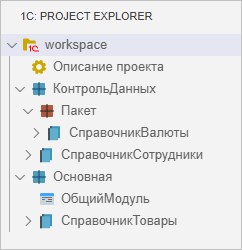

Модульная разработка
Проект состоит из элементов, но в функциональном смысле он разделен на изолированные части, каждая из которых может использоваться в других частях проекта.
Для выделения изолированных частей используйте подсистемы (свойства) и пакеты. Внутрь подсистем и пакетов добавляйте элементы: справочники, перечисления, интерфейсные компоненты, модули и т.д.
Стандартно внутри одной подсистемы вы можете использовать только элементы этой подсистемы. Элементы других подсистем недоступны вам без дополнительных действий.
- В подсистеме Б установите видимость у элементов и у языковых конструкций, которые вы хотите использовать «снаружи» нее;
- В подсистеме А используйте подсистему Б;
- или дополнительно импортируйте в элементы/модули подсистемы А пространства имен из подсистемы Б.
Область видимости элемента проекта
У любого элемента проекта есть свойство ОбластьВидимости со значениями:
- Подсистема — элемент виден внутри своей подсистемы во всех пакетах. Значение по умолчанию;
- Проект — элемент виден во всех подсистемах своего проекта;
- Глобально — элемент виден в других проектах.
Стандартно элемент виден только внутри своей подсистемы (Подсистема) и недоступен в других подсистемах. Если вам хочется использовать этот элемент в других подсистемах или в других проектах, нужно установить у него область видимости в значение Проект или Глобально.
ВидЭлемента: КомпонентИнтерфейса
Имя: ДемонстрационноеПриложение
Id: 76eb6f8f-e340-42ed-8dad-7a1104a6da02
ОбластьВидимости: ПроектТем самым вы сделаете элемент публичным, т. е. он может быть доступен в других подсистемах.
Видимость языковых конструкций
Переменным, методам, перечислениям, структурам, исключениям вы тоже можете задать в модуле область видимости. Для этого используйте модификатор видимости, который может принимать следующие значения:
- @локально — конструкция видна только в своем модуле. Значение по умолчанию;
- @подсистема — конструкция видна только в подсистеме, которой принадлежит модуль;
- @проект — конструкция видна только в проекте, которому принадлежит модуль;
- @глобально — конструкция видна в других проектах.
Например:
@локально
конст СЕКУНД_В_ДНЕ = 60 * 60 * 24
@подсистема
перечисление ВидКнопки
Круглая,
Квадратная
;
@проект
метод ПолучитьОписание()
возврат новый МодульОбъекта.ОписаниеТовара()
;Квалифицированное имя элемента
Все элементы проекта порождают типы встроенного языка. Помимо «обычного», неквалифицированного имени, типы имеют квалифицированные имена. Квалифицированное имя типа состоит из пространства имен и «обычного» имени, разделенных символами «::». Типы, порождаемые элементами проекта, принадлежат пространству имен совпадающему с именем подсистемы и пакета, в которой они были созданы.
Например, есть такой проект:

Тогда квалифицированные имена типов, порождаемых его объектами, будут выглядеть следующим образом:
- КонтрольДанных::Пакет::СправочникВалюты
- КонтрольДанных::СправочникСотрудники
- Основная::ОбщийМодуль
- Основная::СправочникТовары
Для того, чтобы указать имя типа и имя элемента проекта из другой подсистемы/пакета, можно использовать либо квалифицированное, либо неквалифицированное имя. Это зависит от того, только ли использует данная подсистема другую подсистему, или, дополнительно к этому, был выполнен импорт пространства имен.
Использование подсистем
У подсистемы есть свойство Использование. В этом свойстве вы можете перечислить подсистемы, публичные элементы которых вы хотите использовать в данной подсистеме. К типам таких элементов вы сможете обращаться по квалифицированному имени, например:
Реквизиты:
-
Имя: Владелец
Тип: КонтрольДанных::Сотрудники.СсылкаБолее сложный пример. Например, есть такой проект из предыдущего раздела:
В нем подсистема Основная использует подсистему КонтрольДанных:
Использование: [ КонтрольДанных ]У СправочникВалюты и СправочникСотрудники область видимости установлена в значение Проект:
ВидЭлемента: Справочник
Имя: СправочникВалюты
Ид: f7c5212b-aa1b-4502-80c6-e40893f2a90d
ОбластьВидимости: Проект
Реквизиты:
-
Имя: КодУ СправочникВалюты и СправочникСотрудники есть модули объекта и менеджера, в которых определены публичные методы:
@проект
метод Метод_Менеджера()
;@проект
метод Метод_Объекта()
;Тогда реквизиты справочника Товары будут иметь такой вид:
ВидЭлемента: Справочник
Имя: СправочникТовары
Ид: afca4a1f-851f-47aa-8085-08e47a0f4afb
Реквизиты:
-
Имя: Код
Тип: Строка
-
Ид: 222d3946-8163-43ec-a851-4707ca436b2b
Имя: Сотрудник
Тип: КонтрольДанных::СправочникСотрудники.Ссылка?
-
Ид: 733fdb72-4304-4bea-a210-0aad34a492af
Имя: Валюта
Тип: КонтрольДанных::Пакет::СправочникВалюты.Ссылка?А в общем модуле обращение к данным справочников СправочникСотрудники и СправочникВалюты может выглядеть так:
@проект
метод Пример1()
пер Справочник1 = новый КонтрольДанных::СправочникСотрудники.Объект()
// Обращение к атрибуту справочника
Справочник1.Код = "0"
// Вызов публичного метода объекта справочника
Справочник1.Метод_Объекта()
// Вызов публичного метода менеджера справочника
КонтрольДанных::СправочникСотрудники.Метод_Менеджера()
;
@проект
метод Пример2()
пер Справочник2 = новый КонтрольДанных::Пакет::СправочникВалюты.Объект()
// Обращение к атрибуту справочника
Справочник2.Код = "0"
// вызов публичного метода объекта справочника
Справочник2.Метод_Объекта()
// вызов публичного метода менеджера справочника
КонтрольДанных::Пакет::СправочникВалюты.Метод_Менеджера()
;Импорт пространств имен
В любые элементы проекта и в модули вы можете импортировать другие пространства имен.
В элементе проекта они перечисляются в свойстве Импорт, а в модуле для этого используется оператор импорт.
Например в объекте:
ВидЭлемента: Справочник
Имя: ЛичныеКабинеты
Id: a79bd05e-800d-4d9c-a292-eeec023d3f07
ОбластьВидимости: Проект
Импорт:
- ПоказателиСтатистикиESSОбщее
- ОбщиеСтандартные
- ПодключаемыеСтандартные
- ИнтерфейсныеКомпонентыСтандартные
- КонтрольДоступаСтандартные
- УведомленияСтандартные
- ПриложениеОбщееНапример в модуле:
импорт ПоказателиСтатистикиESSОбщее
импорт ОбщиеСтандартные
импорт ПодключаемыеСтандартные
импорт ИнтерфейсныеКомпонентыСтандартные
импорт КонтрольДоступаСтандартные
импорт УведомленияСтандартные
импорт ПриложениеОбщее
метод ПередЗаписью()
...
;Публичные элементы проекта и конструкции языка из импортированных пространств вы можете использовать по неквалифицированному имени. Как будто это «ваши собственные» объекты из этой же подсистемы.
Импорт, выполненный в элементе проекта, не влияет на его модули. То есть пространства имен, импортированные в элемент проекта, не становятся автоматически доступны в модулях этого элемента. Если эти же пространства имен нужны вам и в модулях, то в каждый модуль их нужно импортировать отдельно.